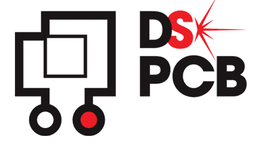
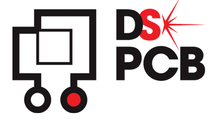

Robot
About
L'ambition de ce projet était de concevoir et développer
une carte électronique sur mesure,
destinée à être intégrée dans un robot afin de lui conférer la capacité de naviguer
et de réussir diverses épreuves. La première phase du projet a
consisté à élaborer une carte électronique sur DesignSpark,
en tenant compte des spécificités techniques et des contraintes physique du robot. L
La phase suivante a impliqué la programmation en C++.
Ce processus comprenait le développement d'algorithmes
pour le traitement des données des capteurs, la prise de décision en temps réel,
et la navigation autonome.
Skills
 
BUT1

BUT1
Dowload the report